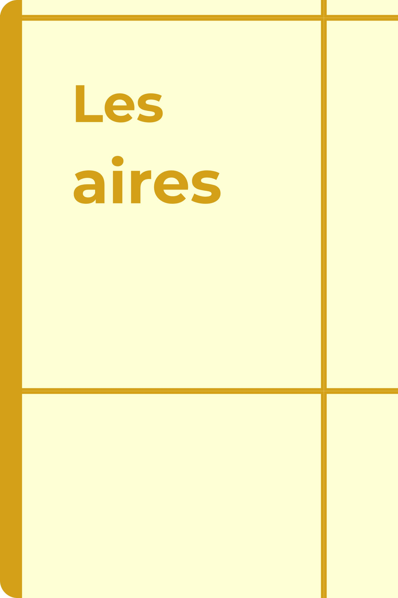

Cette série permet de découvrir concrètement les notions d’aire et de périmètre à partir d’enclos représentés sur un quadrillage. Les élèves apprennent à distinguer la mesure du contour de celle de la surface, puis reproduisent des enclos et calculent leurs aires et leurs périmètres.